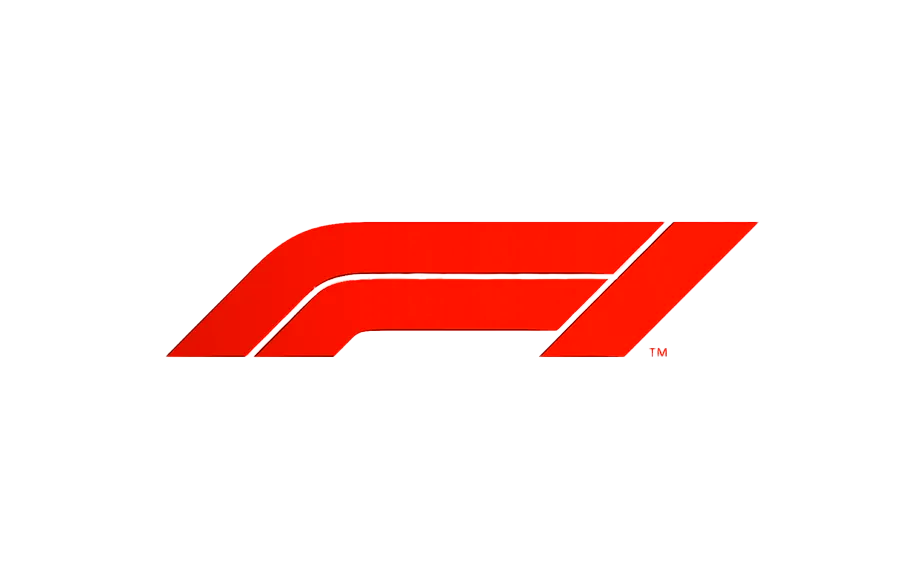

Quem provou o sabor do sucesso em Suzuka?
Max Verstappen teve uma das melhores performances de fim de semana de sua carreira
para converter a pole em vitória no Grande Prêmio do Japão mas enquanto o atual campeão mundial
deixou o Japão de bom humor, alguns de seus rivais ficaram coçando a cabeça sobre sua forma sem brilho.
Lawrence Barretto escolhe seus vencedores e perdedores de Suzuka...

Albon reflete sobre o último esforço de pontuação no Japão
enquanto Sainz insiste que "melhores resultados virão"

"Naquele carro, vocês nem me veriam mais"
Max Verstappen segurou os carros mais rápidos da McLaren e conquistou uma importante vitória
para a RBR no GP do Japão. Depois do triunfo surpreendente, já que a equipe austríaca tem sido
irregular até aqui, o holandês se mostrou bem-humorado. O tetracampeão brincou e indicou que, se
estivesse na equipe papaia, teria uma vantagem enorme em relação aos rivais.
atraso após problema estomacal
O piloto Carlos Sainz, da Williams, recebeu uma multa de 20 mil
euros (R$ 129 mil, na atual cotação) por não se alinhar a tempo com
o restante do grid para a execução do hino japonês, antes do início
da prova realizada em Suzuka no domingo. Desse valor, metade
(10 mil euros, ou 64,5 mil reais) só será cobrada se o espanhol
repetir a infração nos próximos 12 meses.
indício de reação da RBR
A superioridade técnica que marca o início de ano da McLaren na F1
, em 2025, foi neutralizada no GP do Japão neste domingo pela RBR de
Max Verstappen. O tetracampeão venceu sua primeira corrida da temporada
com tranquilidade, e vê o resultado como um indício de que o time austríaco
ainda pode voltar ao topo - se trabalhar na direção certa.
| EQUIPE | PILOTO 1 | PILOTO 2 |
|---|---|---|
| Alpine | Pierre Gasly | Jack Doohan |
| Aston Martin | Fernando Alonso | Lance Stroll |
| Ferrari | Charles Leclerc | Lewis Hamilton |
| Haas | Esteban Ocon | Oliver Bearman |
| McLaren | Lando Norris | Oscar Piastri |
| Mercedes | Andrea Kimi Antonelli | George Russell |
| Red Bull | Max Verstappen | Sergio Pérez |
| Sauber | Nico Hülkenberg | Gabriel Bortoleto |
| Williams | Alexander Albon | Carlos Sainz |
| Posição | Piloto | Equipe | Pontos |
|---|---|---|---|
| 1 | Lando Norris | McLaren/Mercedes | 25 |
| 2 | Max Verstappen | Red Bull Racing/Honda | 18 |
| 3 | George Russell | Mercedes | 15 |
| 4 | Kimi Antonelli | Mercedes | 12 |
| 5 | Alexander Albon | Williams/Mercedes | 10 |
| 6 | Lance Stroll | Aston Martin/Mercedes | 8 |
| 7 | Nico Hulkenberg | Kick Sauber/Ferrari | 6 |
| 8 | Charles Leclerc | Ferrari | 4 |
| 9 | Oscar Piastri | McLaren/Mercedes | 2 |
| 10 | Lewis Hamilton | Ferrari | 1 |
| Posição | Equipe | Pontuação |
|---|---|---|
| 1 |  Red Bull Racing/Honda Red Bull Racing/Honda |
18 |
| 2 | 27 | |
| 3 | 27 | |
| 4 | 5 | |
| 5 | 10 | |
| 6 | 8 | |
| 7 |  Kick Sauber/Ferrari Kick Sauber/Ferrari |
6 |
| Posição | Piloto | Equipe | Pontos |
|---|---|---|---|
| 1 | Oscar Piastri | McLaren/Mercedes | 25 |
| 2 | Lando Norris | McLaren/Mercedes | 18 |
| 3 | George Russell | Mercedes | 15 |
| 4 | Max Verstappen | Red Bull Racing/Honda | 12 |
| 5 | Charles Leclerc | Ferrari | 10 |
| 6 | Lewis Hamilton | Ferrari | 8 |
| 7 | Esteban Ocon | Haas/Ferrari | 6 |
| 8 | Kimi Antonelli | Mercedes | 4 |
| 9 | Alexander Albon | Williams/Mercedes | 2 |
| 10 | Oliver Bearman | Haas/Ferrari | 1 |
| Posição | Equipe | Pontuação |
|---|---|---|
| 1 | Red Bull Racing/Honda |
12 |
| 2 | 43 | |
| 3 | 39 | |
| 4 | 18 | |
| 5 | 7 | |
| 6 |  Williams/Mercedes Williams/Mercedes |
2 |
| Posição | Piloto | Equipe | Pontos |
|---|---|---|---|
| 1 | Max Verstappen | Red Bull Racing/Honda | 25 |
| 2 | Lando Norris | McLaren/Mercedes | 18 |
| 3 | George Russell | Mercedes | 15 |
| 4 | Oscar Piastri | McLaren/Mercedes | 12 |
| 5 | Charles Leclerc | Ferrari | 10 |
| 6 | Lewis Hamilton | Ferrari | 8 |
| 7 | Esteban Ocon | Haas/Ferrari | 6 |
| 8 | Kimi Antonelli | Mercedes | 4 |
| 9 | Alexander Albon | Williams/Mercedes | 2 |
| 10 | Oliver Bearman | Haas/Ferrari | 1 |
| Posição | Equipe | Pontuação |
|---|---|---|
| 1 | Red Bull Racing/Honda |
25 |
| 2 | 30 | |
| 3 | 27 | |
| 4 | 18 | |
| 5 | 7 | |
| 6 | Williams/Mercedes |
2 |